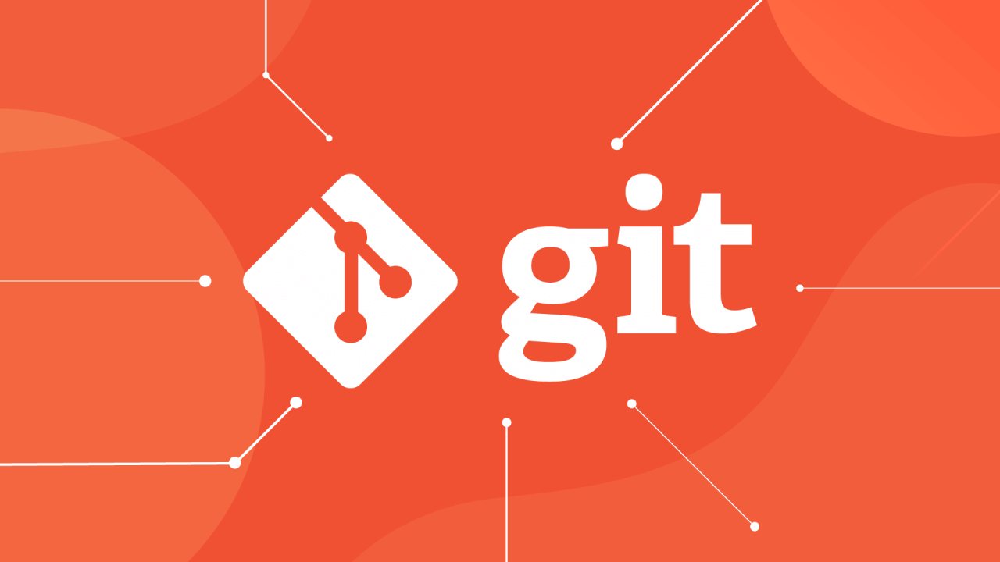
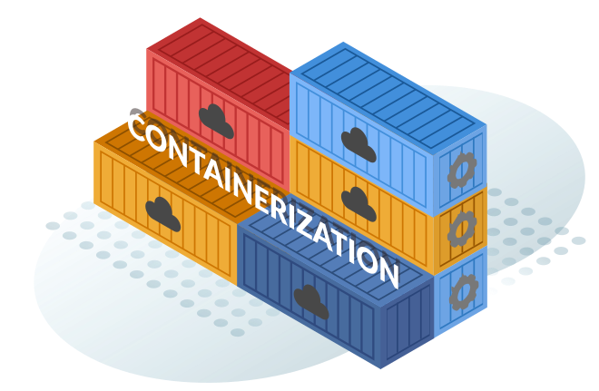
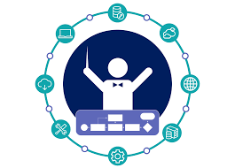
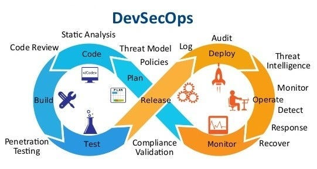

📁 Version Control (VCS) – Foundation of DevOps

🚀 Why It's Important:
Version Control is the backbone of collaboration in software development. It helps teams:
- Track changes in code over time.
- Collaborate efficiently without overwriting each other's work.
- Revert to previous versions when needed (like undoing mistakes).
- Enable automation in CI/CD pipelines.
📘 Key Concepts:
| Concept |
Description |
| 🔄 Repository (Repo) | A storage location where your code and its version history are saved (like a project folder). |
| 🌳 Branching | Creating a separate line of development — ideal for working on features without affecting the main code. |
| ⬇️ Clone / Pull | Downloading the latest version of the code from the repository. |
| ⬆️ Push | Sending your changes to the repository so others can access them. |
| 🔁 Merge | Integrating changes from one branch into another. |
| 💥 Conflict | When two developers change the same line of code — needs manual resolution. |
| 🛠 Commit | A snapshot of your changes with a message explaining what changed. |
🔧 Popular Tools:
- Git – the most widely used VCS tool.
- GitHub, GitLab, Bitbucket – hosting platforms for Git repositories with collaboration features.
🛠 Common Git Commands:
git init # Initialize a new Git repo
git clone <repo-url> # Clone a repo
git status # Show file changes
git add <file> # Stage changes
git commit -m "Message" # Commit changes
git push origin main # Push to remote branch
git pull # Pull latest code
git checkout -b new-branch # Create and switch to a new branch
📈 Role in DevOps:
- Source of Truth: All teams pull and push code from the same place.
- Enabler of CI/CD: Automation tools like Jenkins, GitHub Actions trigger builds and tests based on commits and pull requests.
- Audit & Compliance: Tracks who made what change and when — useful for audits and debugging.
✅ Must-Learn Topics in Version Control:
- Git Basics: clone, commit, push, pull
- Branching & Merging
- Pull Requests (PR)
- Resolving Merge Conflicts
- Working with remote repositories (GitHub)
- Creating and using
.gitignore
- Understanding
rebase, stash, reset, revert
📁 CI/CD – Continuous Integration & Continuous Deployment

🚀 Why It's Important:
CI/CD automates software testing, integration, and delivery so developers can ship high-quality code faster and more reliably.
• Reduces manual effort in testing and deployment.
• Catches bugs early during development.
• Provides quick feedback to developers.
• Speeds up release cycles with confidence.
• Essential for Agile and DevOps practices.
📘 Key Concepts:
🔄 Continuous Integration – Automatically testing and integrating code whenever changes are pushed.
🚚 Continuous Delivery – Automatically preparing code for a production release.
🚀 Continuous Deployment – Automatically releasing code to production after passing all tests.
🧪 Automated Testing – Running test suites automatically on new commits.
🔁 Pipelines – Series of automated steps for build, test, and deployment.
📦 Artifacts – Packaged versions of applications generated by the build process.
🔧 Popular CI/CD Tools:
• Jenkins – Open-source automation server.
• GitHub Actions – GitHub-native CI/CD tool.
• GitLab CI – Built into GitLab for end-to-end DevOps.
• CircleCI – Cloud-native CI/CD platform.
• Travis CI – Simple and widely used CI tool.
• Azure DevOps – Microsoft's integrated CI/CD platform.
🛠 Sample CI/CD Pipeline Steps:
# Example Pipeline Steps
- Checkout code
- Install dependencies
- Run unit tests
- Build application
- Deploy to staging
- Deploy to production (if tests pass)
📈 Role in DevOps:
• Core practice that links development and operations.
• Enables frequent, reliable releases.
• Reduces risk and increases delivery speed.
• Automates rollback in case of failures.
✅ Must-Learn Topics in CI/CD:
• Understanding the CI/CD lifecycle
• Writing CI/CD pipeline scripts (YAML)
• Working with tools like Jenkins, GitHub Actions
• Automating test cases
• Deploying to staging and production environments
• Monitoring and rollback strategies
📁 Configuration Management – Ensuring Consistency Across Environments

🚀 Why It's Important:
Configuration Management (CM) allows DevOps teams to maintain consistency across development, testing, and production environments by automating the configuration of systems and applications.
• Reduces human error in configuring environments.
• Enables version-controlled, repeatable infrastructure.
• Supports scalability and faster deployment.
• Integrates with CI/CD pipelines for automated environment provisioning.
📘 Key Concepts:
🔧 Infrastructure as Code (IaC) – Managing infrastructure using code and automation.
🧾 Configuration Files – Scripts or YAML/JSON files that define desired system settings.
🔄 Idempotency – Applying the same configuration multiple times results in the same system state.
🗂 Inventory – A list of servers or nodes managed by the tool.
📋 Playbook/Manifest – Files that define the configuration logic and instructions.
🔧 Popular Tools:
• Ansible – Simple, agentless tool using YAML playbooks.
• Puppet – Declarative language, agent-based, suitable for large infrastructures.
• Chef – Ruby-based, uses cookbooks and recipes.
• SaltStack – Scalable, event-driven automation tool.
• Terraform – Infrastructure provisioning tool, works great with configuration tools.
🛠 Sample Ansible Commands:
ansible --version
ansible all -i inventory -m ping
ansible-playbook -i inventory playbook.yml
📈 Role in DevOps:
• Enables consistent and predictable environment setup.
• Reduces configuration drift across servers.
• Simplifies scaling and recovery of environments.
• Speeds up deployments by automating infrastructure configuration.
✅ Must-Learn Topics in Configuration Management:
• Basics of tools like Ansible, Puppet, or Chef
• Writing and running playbooks or manifests
• Using inventory files
• Configuration as Code (CaC) vs Infrastructure as Code (IaC)
• Integrating CM tools with CI/CD pipelines
📁 Containerization – Lightweight Virtualization for Modern Apps

🚀 Why It's Important:
Containerization allows you to package an application and its dependencies together into a single unit that can run anywhere — making deployments faster, more reliable, and consistent across environments.
• Consistent environment across development, testing, and production.
• Lightweight and fast compared to traditional virtual machines.
• Isolated apps improve security and scalability.
• Essential for microservices architecture and CI/CD pipelines.
📘 Key Concepts:
🔹 Image – A snapshot of your app and its environment (OS, code, libraries).
🔹 Container – A running instance of an image.
🔹 Dockerfile – Script to create a Docker image.
🔹 Docker Hub – Public registry to store and share Docker images.
🔹 Volume – Persistent storage for containers.
🔹 Network – Communication between containers and external systems.
🔧 Popular Container Tools:
• Docker – The most popular containerization platform.
• Podman – An alternative to Docker, rootless by design.
• Buildah – Used to build OCI images without Docker.
• Containerd – A runtime for managing containers.
🛠 Common Docker Commands:
docker build -t app-name .
docker run -d -p 3000:3000 app-name
docker ps
docker stop container_id
docker images
docker exec -it container_id bash
docker volume create volume_name
📈 Role in DevOps:
• Enables portable, scalable, and reproducible deployments.
• Integrates with orchestration tools like Kubernetes.
• Supports CI/CD workflows with fast container-based testing.
• Makes rollback and scaling easy.
✅ Must-Learn Topics in Containerization:
• Creating and managing Dockerfiles
• Building and running containers
• Working with Docker Compose for multi-container apps
• Managing data with Docker volumes
• Networking between containers
• Pushing/pulling images to/from Docker Hub
📁 Container Orchestration – Managing Containers at Scale

🚀 Why It's Important:
Container orchestration automates the deployment, scaling, and management of containerized applications. As your app grows, manually handling containers becomes difficult — orchestration makes it seamless.
• Automatically deploy and scale containers
• Manage load balancing, networking, and service discovery
• Self-healing — restart failed containers
• Rollback and rollouts for updates
• Manage configurations and secrets securely
📘 Key Concepts:
🔹 Pod – The smallest deployable unit in Kubernetes (can contain one or more containers)
🔹 Node – A machine (VM/physical) that runs container workloads
🔹 Cluster – A group of nodes managed together
🔹 Service – Exposes pods to internal or external traffic
🔹 Deployment – Manages updates and desired state of application
🔹 Volume – Persistent storage for containers
🔧 Popular Tools:
• Kubernetes – The most widely used orchestration tool
• Docker Swarm – Lightweight orchestration by Docker
• OpenShift – Enterprise Kubernetes platform
• Amazon ECS / EKS – Managed container orchestration by AWS
• Azure AKS / Google GKE – Kubernetes services by Azure & Google Cloud
🛠 Common kubectl Commands:
kubectl get pods
kubectl get nodes
kubectl apply -f deployment.yaml
kubectl delete pod <pod-name>
kubectl describe pod <pod-name>
kubectl logs <pod-name>
📈 Role in DevOps:
• Automates scaling, deployment, and updates of applications
• Provides monitoring and health-checks of services
• Facilitates microservices architecture
• Works with CI/CD pipelines to deploy apps in clusters
✅ Must-Learn Topics in Container Orchestration:
• Kubernetes architecture: pods, services, deployments, volumes
• YAML configuration files
• Working with kubectl and Helm charts
• Cluster monitoring and logging
• Networking and service discovery
• Managing secrets and configs
📁 Monitoring & Logging – Observability in DevOps
🚀 Why It's Important:
Monitoring and logging are essential for ensuring application performance, identifying issues, and maintaining system health in production environments.
• Detect and respond to system failures in real-time.
• Understand performance trends and bottlenecks.
• Enable root cause analysis through logs.
• Support continuous improvement and incident management.
📘 Key Concepts:
🔸 Monitoring – Real-time tracking of system metrics like CPU, memory, and network usage.
🔸 Logging – Capturing detailed application events for debugging and auditing.
🔸 Metrics – Quantitative data collected over time (e.g., response time, error rates).
🔸 Alerting – Notifications triggered when thresholds are crossed.
🔸 Observability – The overall ability to understand the internal state of a system based on logs, metrics, and traces.
🔧 Popular Tools:
• Prometheus – Time-series monitoring and alerting toolkit.
• Grafana – Visualization and dashboard tool often paired with Prometheus.
• ELK Stack – Elasticsearch, Logstash, Kibana for log aggregation and analysis.
• Fluentd – Open-source log collector.
• DataDog – Monitoring, logging, and APM solution.
• Splunk – Enterprise-level log management and monitoring.
📈 Role in DevOps:
• Ensures high availability and reliability.
• Enables proactive incident detection.
• Supports system optimization with real data.
• Provides visibility into microservices and distributed systems.
✅ Must-Learn Topics in Monitoring & Logging:
• Setting up Prometheus and Grafana
• Log collection with Fluentd or Logstash
• Creating dashboards and visualizations
• Configuring alerts and thresholds
• Understanding logs and using them for debugging
• Analyzing system metrics and traces
📁 Cloud Providers – Backbone of Scalable Infrastructure

🚀 Why They're Important:
Cloud providers offer on-demand computing resources over the internet. They eliminate the need for physical hardware and enable scalable, flexible, and cost-effective infrastructure — a crucial part of DevOps automation.
• Easily scale applications up or down.
• Pay only for what you use.
• High availability and global distribution.
• Seamless integration with DevOps tools.
📘 Key Concepts:
🔸 IaaS (Infrastructure as a Service) – Provides virtual machines, storage, and networks.
🔸 PaaS (Platform as a Service) – Offers environments for app development without managing infrastructure.
🔸 SaaS (Software as a Service) – Delivers applications over the internet (e.g., Gmail, Dropbox).
🔸 Regions & Zones – Geographic areas where cloud services are hosted.
🔸 Autoscaling – Automatically adjusts resources based on traffic/load.
🔸 Load Balancing – Distributes incoming traffic across multiple servers for reliability.
🔧 Popular Cloud Providers:
• Amazon Web Services (AWS) – Most widely adopted cloud platform.
• Microsoft Azure – Strong integration with Microsoft tools.
• Google Cloud Platform (GCP) – Great for data and analytics workloads.
• IBM Cloud – Hybrid cloud and enterprise solutions.
• Oracle Cloud – Database and enterprise software focus.
• DigitalOcean – Simplified cloud for developers.
🛠 Services to Know:
• EC2, S3, Lambda (AWS)
• App Engine, Compute Engine (GCP)
• Azure Virtual Machines, Azure Functions
• Kubernetes Services (AKS, GKE, EKS)
📈 Role in DevOps:
• Infrastructure provisioning with tools like Terraform or CloudFormation.
• Hosting applications and services.
• Integrating CI/CD pipelines with cloud-hosted environments.
• Monitoring and logging cloud-based applications.
✅ Must-Learn Topics in Cloud Providers:
• Basic cloud service models: IaaS, PaaS, SaaS
• Core cloud services: Compute, Storage, Networking
• Managing resources via Web UI, CLI, and SDK
• IAM (Identity and Access Management)
• Deploying apps and scaling them in the cloud
📁 DevSecOps – Integrating Security in DevOps

🚀 Why It's Important:
DevSecOps integrates security practices into the DevOps process, ensuring that security is part of the continuous integration, continuous delivery (CI/CD), and testing pipelines.
• Shifts security left, making it part of every phase of development.
• Reduces vulnerabilities by addressing security concerns early.
• Helps prevent costly security issues in production.
• Enhances collaboration between development, operations, and security teams.
📘 Key Concepts:
🔸 Shift Left – The practice of integrating security earlier in the software development lifecycle (SDLC).
🔸 Continuous Security – Using automated tools to ensure security compliance at every stage of DevOps.
🔸 Infrastructure as Code (IaC) Security – Automating security policies and configurations for infrastructure.
🔸 Automated Security Testing – Running security tests automatically as part of the CI/CD pipeline.
🔸 Vulnerability Scanning – Regularly scanning code for vulnerabilities during development and testing.
🔸 Threat Modeling – Identifying potential security threats during design and early development.
🔧 Tools Used in DevSecOps:
• **Snyk** – Scans dependencies for known vulnerabilities.
• **Aqua Security** – Container security and vulnerability scanning.
• **OWASP ZAP** – Automated security testing for web applications.
• **SonarQube** – Static code analysis tool for finding bugs and security vulnerabilities.
• **HashiCorp Vault** – Secures secrets and sensitive data.
• **Fortify** – Security testing for applications and software components.
🛠 Sample DevSecOps Actions:
# Running security tests with OWASP ZAP
zap-cli quick-scan
# Using Snyk for dependency vulnerability scanning
snyk test --all-projects
# Scanning containers with Aqua Security
aqua scan
# Running static code analysis with SonarQube
sonar-scanner
📈 Role in DevOps:
• Enhances security without slowing down development processes.
• Ensures that security is an ongoing part of the development and deployment pipeline.
• Helps meet compliance standards by automating security checks.
• Promotes a security-first mindset within DevOps teams.
✅ Must-Learn Topics in DevSecOps:
• Integrating security testing into CI/CD pipelines
• Implementing automated vulnerability scans
• Best practices for managing secrets and sensitive data
• Threat modeling and risk assessment
• Using tools like Snyk, Aqua Security, and SonarQube